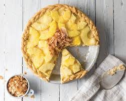

HOW TO MAKE EASY PINEAPPLE PIE

INGREDIENTS:
- 1 Ready-Made pie dough
- 300 grams white sugar
- 300 grams pineapple juice/ syrup
- 300 grams pineapple
- 80 grams cornstarch
- 6 grams salt
- 15 grams butter
INSTRUCTIONS:
- In a saucepan, combine 80% of pineapple juice, salt, sugar and bring to boil.
- Dissovle 20% of pineapple juice into the cornstarch and pour into boiling solution.
- Bring to boil again and add crushed pineapple. Stir until thick.
- Add shortening and remove from heat. Let cool.
- Dispense into pre-baked pie crust.
- Decorate top/edges of the crust. Apply eggwash (NOTE: it can be applied 5 minutes before it is done)
- Bake at least 180 deg. F for 25 minutes or until crust is colored on top.